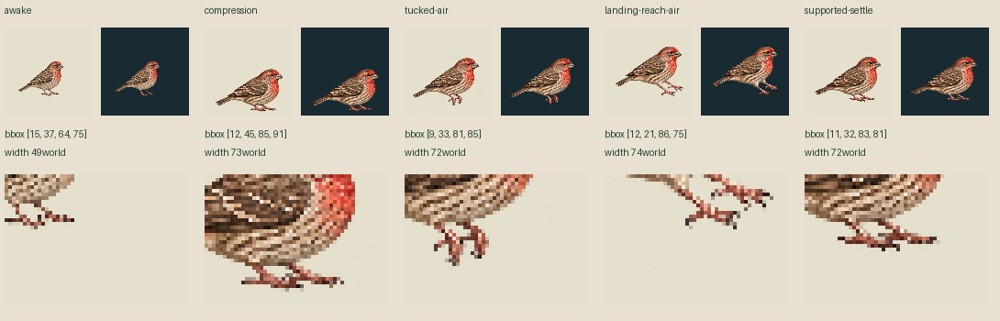
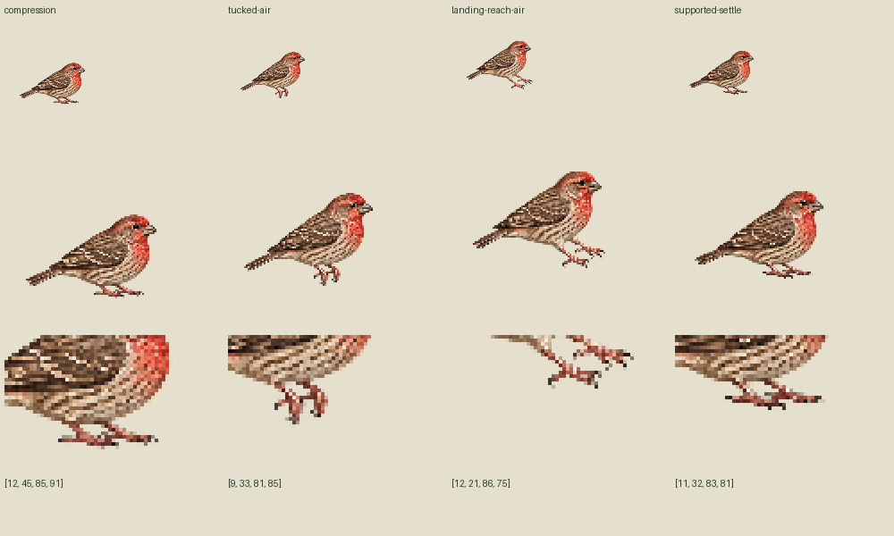

Four actual body/leg drawings from one call. Exact old awake is reused. New family is72–74world wide versus old49: canvas placement/individual scale failed. These are held studies, not a completed hop or validated support.
Nominal root moves+16world only while airborne; analytic apex8world (sampled7.68). Line atworld100 is diagnostic only. Native feet miss/penetrate it. No source fitting, snapping or body resizing repairs this. Source pose switches can jump despite continuous nominal root. Explicit restart resets position; no seamless loop.
Authored30Hz:6awake/3compression/3tuck/3reach/3settle/12awake. Final sample29 stays awake through1000ms. Newframe contacts[]; toe-image dots are not physical support. Original primary69tick blink unchanged; own awake-onlyidle90 separate.


Source-only/unreviewed/activationnone. Canonical Zod/Sharp NOT_RUN; current Mac binding UNKNOWN. No completed locomotion/biological timing or physical support claim. Original/prompt/allRGBA retained; no retry.
Primary source provenance · Strict review profile · Frame mapping · Authored trajectory and pose clocks · Actual image probes